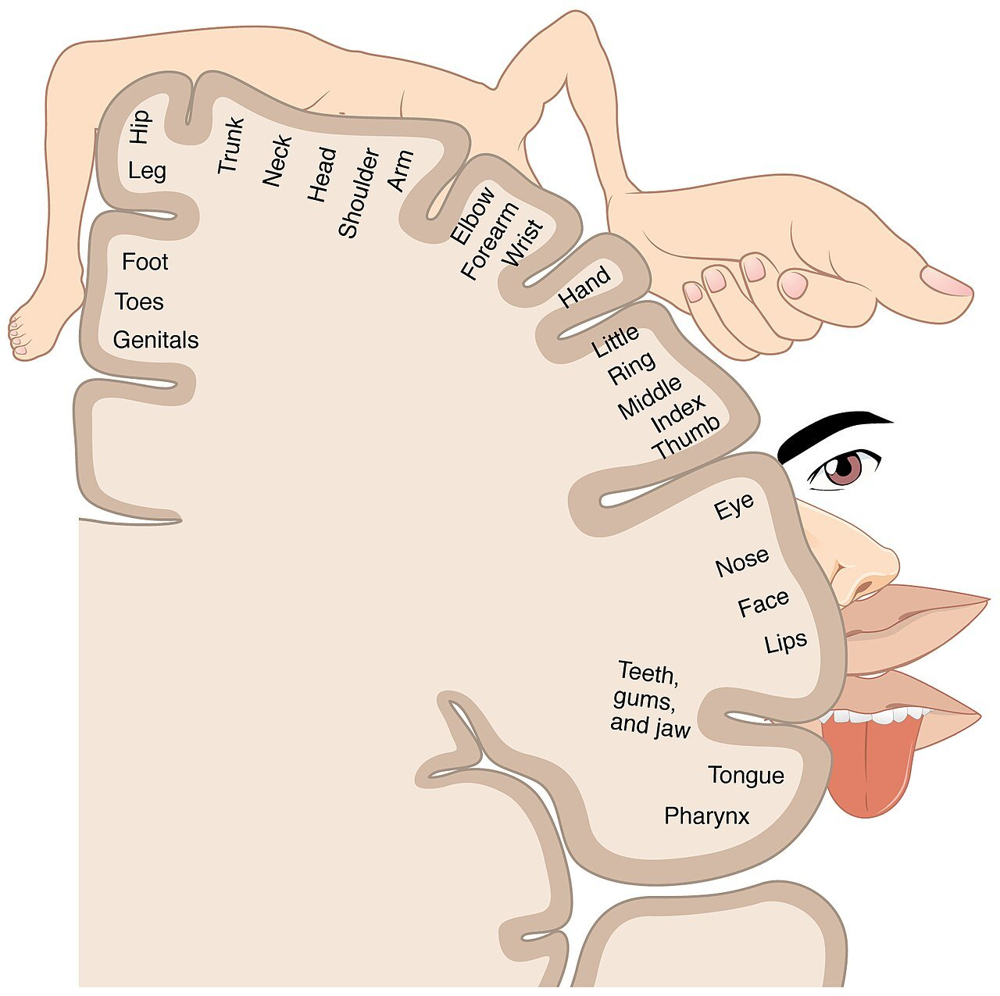

The HMR physics health model.
The physical half of the HMR's model of health: how a body is read as a physical system, how it is imaged and diagnosed, how the brain maps it, and how diseases are classified by the physics that produces them. The holistic model →
Watch the body move. Image it in many positions. Keep the record for life.
Observe movement. A tensegrity shows its faults when it moves: a shoulder that rises before the arm, a hip that turns as the knee bends, a breath that lifts the chest but not the ribs. Trained eyes, and cameras, can read the web from how the body moves.
Image in positions, not just lying still. Today most scans are taken lying flat, the one position in which gravity and posture are switched off. The HMR's model images the same body standing, bending, stretched, on a full inhale and on a full exhale, so the scans show how the web changes shape under load. Upright and positional MRI, ultrasound that measures how layers slide, and 3D body scanning already exist.
Repeat it through life, especially around puberty. Periodic imaging builds a 3D profile of each person's tensegrity over the years. When a symptom appears, it can be mapped onto what changed in the web before it, and when.
Make it inexpensive. Scans are costly today. But a healthcare system built around fascia would save heavily elsewhere: far fewer clinics and devices for treating injuries and pain after the fact. The money moves to proactive, upfront prevention. The whole system changes from fixing problems to preventing them.
Each position loads the web differently. Comparing them shows where it is stiff, slack or stuck.
The brain maps the body. The HMR proposes it holds two maps.


"the neural network, or 'neuromatrix', that subserves body sensation has a genetically determined substrate that is modified by sensory experience."
Melzack, 1990, Trends in Neurosciences. PubMed 1691874
An inborn map shaped by experience is the closest point science has reached to the HMR's two maps; the HMR goes further in proposing that the inborn map encodes the ideal. It proposes that slow, attentive practice lets a person sense where the body does not match that ideal, and that attending to those places with breath and muscle, held over time, can change the tissue there. This is a hypothesis to test, not an established finding.
What science knows
- The cortex holds maps of the body, found by stimulating the brain in surgery (Penfield and Boldrey, 1937).
- The brain keeps an updated postural model of the body, the body schema (Head and Holmes, 1911), separate from the conscious body image (de Vignemont, 2010).
- Interoception maps the body's inner state, "the material me" (Craig, 2002).
- Some children born without a limb still feel it, which suggests part of the body map is inborn (Melzack, 1990).
- In chronic back pain, the brain's image of the painful area is disrupted (Moseley, 2008).
What the HMR proposes
Beneath the learned maps, the brain holds a subconscious, ideal map of the body: the optimal tensegrity, given by UI. Alongside it is a learned map of the body as it actually is, imperfections included.
Every movement is a blend of the two, and the psyche is constantly trying to reconcile them, whether we know it or not.
Sort conditions by what the physics did, not only by where it hurts.
Medicine mostly classifies disease by organ and by symptom. The HMR proposes classifying it by mechanism: what happened to the body's tensegrity, and what that did to everything running through it. The categories below are the HMR's proposal. The conditions listed are examples the HMR expects to fit each category; for most of them, the fit is a hypothesis to be tested in the simulation.
1Set before birth: DNA and the womb
The blueprint of the web is altered: the collagen itself is built differently, or the body is shaped in the womb in a way that sets its starting tensions.
- Ehlers-Danlos syndromes and Marfan syndrome (inherited changes to connective tissue itself; established)
- Osteogenesis imperfecta
- Congenital clubfoot and developmental hip dysplasia
- Congenital torticollis
2Local adhesions and densification
In one place, fascia becomes denser and its layers stop gliding, through gravity, overuse, injury or disuse. The densification hypothesis starts here.
- Chronic low back pain (measured loss of fascial gliding: Langevin, 2011)
- Frozen shoulder
- Plantar fasciitis
- Dupuytren's contracture
- Tennis elbow and many chronic neck and shoulder pains
3Downstream creep
A local change spreads. Tension redistributes along the lines of the web, and the body's shape shifts far from where it began, leaving some regions too tight and others too slack.
- Adolescent idiopathic scoliosis
- Excessive kyphosis and forward head posture
- Pelvic tilt and leg-length differences that are functional, not bony
- Flat feet, bunions and knees that collapse inward
- Jaw (TMJ) disorders
4Compression of what runs through the web
Vessels, lymphatics, nerves and the heart and lungs run through fascia. When the web tightens or shifts, it can squeeze or kink them.
- Nerves: carpal tunnel syndrome, thoracic outlet syndrome, piriformis syndrome and some sciatica
- Vessels: May-Thurner syndrome, nutcracker syndrome, median arcuate ligament syndrome, popliteal artery entrapment (all recognized compression syndromes)
- Venous and lymphatic flow: varicose veins, lymphedema
- Heart and lungs: breathing restricted by a stiff rib cage and diaphragm
- Heart attacks and stroke, read as problems of the vessels: blood moves as a pulse, a wave with peaks and troughs, and a web that squeezes or stiffens a vessel changes that wave. Waves can be disrupted badly, so the HMR treats anything in the web that alters the pulse as serious (HMR hypothesis).
5Signaling errors
The body runs on signals: hormones, immune messengers, nerve impulses. The HMR proposes two mechanical ways they go wrong. The glands that make hormones are physical "factories" that can be squeezed and strained by the web around them; and between where a signal is sent and where it is received there is always connective tissue, which, if it is damaged, can distort what arrives. Its hypothesis about cancer follows from this: somewhere in the cancer picture is a signaling error, in which a cell asks for too much mass and nutrients, or is pushed to take on too much.
- Thyroid and adrenal disorders; insulin resistance (HMR hypothesis)
- Cancer: stiffer, more cross-linked tissue around a tumor drives its growth in lab studies (Paszek et al., 2005; Levental et al., 2009), and gentle daily stretching slowed tumor growth in mice (Berrueta et al., 2018). The wider cancer hypothesis is the HMR's.
- Chronic inflammation that does not resolve
6From outside: viruses, bacteria and toxins
Some disease starts with an outside agent. The HMR's question here is not the agent but the terrain: how the state of the web, its fluid flow and its lymphatic drainage affect who falls ill, how badly, and how fully they recover.
- Viral and bacterial infections, and slow recovery after them
- Responses to toxins and pollutants
7Sudden force: injury
A fall, a collision or one overload tears or breaks something at once. What the HMR adds is what happens next: how the rest of the web reorganizes around the injury, and whether that new shape becomes permanent.
- Fractures, ligament and tendon tears, whiplash
- The chronic pain and altered movement that can follow them
8Building materials: nutrition and metabolism
The web is built and rebuilt from what a person eats and drinks. Missing materials, or a body that cannot use them, weakens the tissue everywhere at once.
- Scurvy, the classic collagen failure from lack of vitamin C (established)
- Dehydration, and tissue changes in diabetes
Many real cases will involve more than one category at once: a genetic starting point, a local adhesion, its downstream creep and what it compresses. The point of the classification is to ask, for each condition, which physical process came first. How it will be tested →